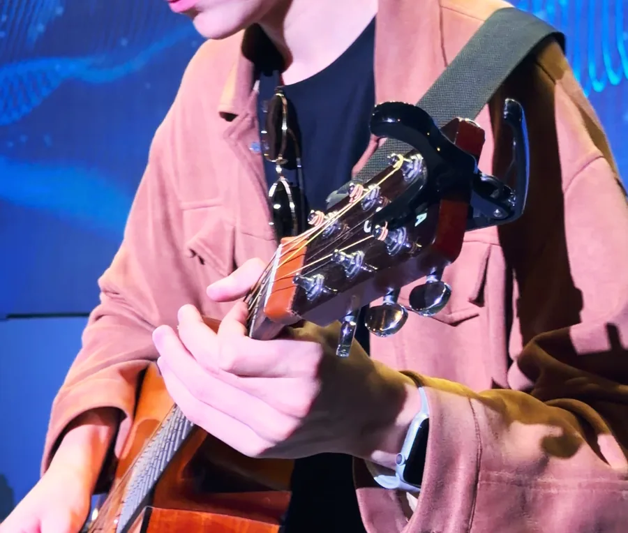

Акустика, пока гости собираются
Артём играет акустический сет на гитаре: музыка звучит, но не мешает разговорам, знакомству и фотографиям.
AirПоцы · свадьба
Живой состав — вокал, гитара, бас и барабаны — на welcome-зоне, на первом танце и на танцполе. Три блока по 30 минут встраиваются в тайминг ведущего, а технику мы согласуем с площадкой сами.

Что делаем на свадьбе
Свадебный вечер — это не один концерт, а несколько разных моментов: гости знакомятся на welcome-зоне, пара выходит на первый танец, потом начинается танцпол. Живой состав подстраивается под каждый из них.
Артём играет акустический сет на гитаре: музыка звучит, но не мешает разговорам, знакомству и фотографиям.
Песню для первого танца можно исполнить вживую. Если её нет в репертуаре, разучим. Подробнее — на странице «Первый танец под живую музыку».
Фронтмен Денис Коняев работает с залом, а не только поёт со сцены, и поднимает на танцпол даже тех, кто «не танцует».
В репертуаре Корж, Агутин, Звери, Самолёты, Градусы, HolidayBoy. Пришлите список треков, которые любите вы и ваши гости, — соберём сет под ваш вечер.
Формат
Группа не занимает вечер целиком. Три блока по 30 минут ставятся между частями программы ведущего — тостами, ужином, номерами гостей. Так танцпол каждый раз начинается с новой энергией, а у ведущего остаётся время на программу.
Это один из вариантов. Когда ставить блоки, первый танец и паузы, решаем заранее вместе с вами и с ведущим. Подробно о формате — в материале «Сколько длится выступление кавер-группы».
Состав
Фронтмен и лидер группы. Работает с залом и поднимает на танцпол даже тех, кто «не танцует».
Электрика на танцполе и акустика на welcome-зоне, пока гости собираются.
Низкие частоты, на которых держится танцпол.
Барабаны и кахон — ритм, под который сложно усидеть на месте.
AirПоцы — проект агентства НАВСЕГДА. Вокалист и лидер группы Денис Коняев — основатель агентства, поэтому мы знаем площадки и тайминг праздника изнутри.
Сервис
Саундчек проходит до прихода гостей — к началу вечера всё уже звучит.
Во время работы никакого алкоголя: трезвая голова и чистый звук.
Оборудование согласуем с площадкой сами, без лишних звонков с вашей стороны.
Заключаем договор и предоставляем закрывающие документы.
Площадки, где нас уже слышали: Кристалл Гарден в Коломенском, усадьба Остафьево, Spark и сцена форума с залом на 500+ человек.
Бонусы до 30.11
Если вы ещё выбираете площадку или хотите отдать организацию целиком, посмотрите свадьбу под ключ от агентства НАВСЕГДА и каталог площадок для свадьбы.
Ещё о группе
Вопросы
Формат — три блока по 30 минут. Они встраиваются в тайминг ведущего: когда ставить блоки и как распределить паузы, решаем заранее вместе с вами и с ведущим.
Да. Если песни нет в нашем репертуаре, мы её разучим. При бронировании до 30.11 разучивание песни для первого танца — бесплатно, а в подарок — видео первого танца под живую музыку.
В репертуаре Корж, Агутин, Звери, Самолёты, Градусы, HolidayBoy, а песни по заявкам мы разучиваем. Пришлите список любимых треков — соберём сет под ваш вечер.
Нет. Технику мы согласуем с площадкой сами. Приезжаем заранее и делаем саундчек до прихода гостей, чтобы к началу вечера всё уже звучало.
Оставьте заявку: имя, телефон, дату и площадку. Или позвоните +7 958 541-00-41, или напишите в WhatsApp или Telegram +7 915 090-72-90 — вернёмся с условиями под ваш вечер.
Заявка
Оставьте данные — вернёмся с условиями под вашу дату. Или позвоните: +7 958 541-00-41.
Спасибо! Мы свяжемся с вами, чтобы обсудить дату, площадку и плейлист вечера.
Если хочется быстрее: +7 958 541-00-41 или WhatsApp.